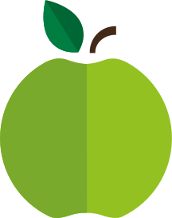
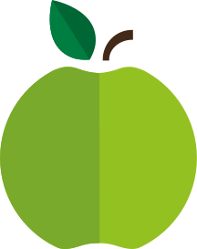

UPPDRAG 1
TA REDA PÅ HUR DET VAR FÖRR?
Prata med någon som är lite äldre och fråga hur mycket mat, men även annat, de slängde förr. Fråga även om de hade vattenklosetter eller utedass. I Sverige fick en del tassa ut på gården om nätterna för att kissa och bajsa, både på landet och i stan, så sent som på 70-talet. Hur växte dina föräldrar, mor- och farföräldrar upp? Sorterade de mat, papper och glas när de var små? Hur förvarades maten? Om någon av dina föräldrar växt upp i något annat land, fråga även hur det ser ut där idag. Slänger man lika mycket mat där som i Sverige? Sorteras matavfallet? Sorteras andra sopor?
Gör en berättelse där du visar vad den person du har pratat med gjorde med matrester och sopor som liten, men även hur man gick på toaletten och vad man gjorde med det avfallet.


 
